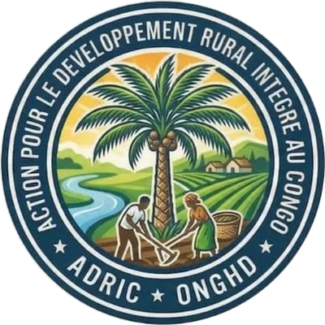

Notre mission
Accompagner les paysans de la RDC dans l'amélioration durable de leurs exploitations agricoles et pastorales, par l'encadrement technique, le matériel et le crédit.
ADRIC est une association sans but lucratif non confessionnelle, organisation non gouvernementale de développement (ONGHD) de droit congolais, basée à Kinshasa.
L'Action pour le Développement Rural Intègre au Congo (ADRIC) a été fondée à Kinshasa par Getou Kocha Nzietukila. Son règlement d'ordre intérieur a été adopté le 2 novembre 2000 par son premier Conseil d'Administration, puis authentifié par acte notarié le 25 juillet 2002.
Dès l'origine, ADRIC s'est donné une ambition claire : permettre aux communautés rurales de vivre dignement de l'agriculture et de l'élevage, grâce à un encadrement technique et matériel de proximité.
Son centre agropastoral est le cœur de ses activités : c'est là que se tiennent les formations, les démonstrations et l'Assemblée générale annuelle de l'association.

Accompagner les paysans de la RDC dans l'amélioration durable de leurs exploitations agricoles et pastorales, par l'encadrement technique, le matériel et le crédit.
Un Congo rural prospère, où chaque famille vit de son travail de la terre tout en préservant l'environnement pour les générations futures.
Intégrité et transparence : budget adopté par l'Assemblée générale, commissariat aux comptes et rapport financier à chaque fin d'exercice.
Les membres bénéficiaires d'ADRIC reçoivent un appui concret pour développer leur exploitation.
Outils agricoles mis à disposition des paysans pour travailler leurs champs.
Intrants agricoles, graines et plantules d'essences forestières.
Animaux reproducteurs pour lancer ou améliorer un élevage.
Accompagnement par des techniciens agropastoraux sur le terrain.
Petits prêts sur un an maximum pour renforcer les exploitations.
Une aide aux membres lors des événements familiaux importants.
ADRIC est dirigée par un Conseil d'Administration élu par l'Assemblée générale de ses membres effectifs.
Fondatrice et Coordonnatrice
Président du Conseil d'Administration
Vice-Présidente du Conseil d'Administration
Membre du Conseil d'Administration
Conseillère au Conseil d'Administration
Conseiller au Conseil d'Administration
Conformément à ses statuts, ADRIC finance ses activités grâce à :
Vous partagez nos valeurs ? Adressez une demande d'adhésion au Conseil d'Administration ou proposez-nous un partenariat.